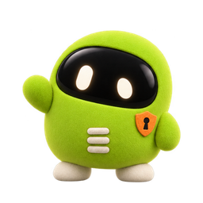

A calm system for your Bitcoin agent.
bitcode pairs Bitcoin's original orange with a quiet, editorial surface: warm cream canvas by day, deep graphite at night, hairline depth, and JetBrains Mono on every command, address and amount. Two things are ours alone, the pixel b and the four Sats. Confident, never loud.
Logo
A 4×5 pixel b: orange body, base in the theme's ink. On light the base is near-black, on dark it turns white. The rule never adds a color. The wordmark is the original site lockup: the pixel b, then "bitcode" in Inter 600, centered on the mark; the terminal lockup is for CLI, READMEs and badges only.
Clear space and size
Keep one mark pixel of empty space on every side. Never below 16 px for the mark or 80 px wide for the wordmark. Never smooth, rotate, outline, add shadows or recolor outside these files.
Sats
Four small spirits, one per job of the agent. Plush felt, black visor, two glowing eyes, cream feet, and one orange detail that says what they do. They move clumsily on purpose. The logo leads; the Sats keep you company.
Where a Sat may appear
Color
Bitcoin orange is the single brand voltage: the mark and one primary action per screen. Everything else is warm neutral. Two themes share every token name; only the values change. Click any swatch to copy it.
Brand & accent
Surface, hairline & text · light and dark
Light
Dark
Agent stages · signature palette
The transaction pastels double as the agent's stages, from thinking to done. Scoped to timelines and status pills, never used as action or system colors.
Semantic
Sats
Typography
Inter carries display and body. Display stays at weight 400 with negative tracking, never bold. JetBrains Mono renders every command, address, amount and txid.
Spacing
4 px base unit. Sections breathe on an 80 px rhythm.
Shape & depth
Hairline-only depth, no drop shadows. 8 px on actions, 12 px on cards. The pixel mark is the only sharp corner.
Buttons
One brand action, orange, kept scarce. Text on orange is the dark onAccent, never white: white on #f7931a fails contrast.
Agent workspace & stage timeline
The one elevated surface: a multi-pane mockup mirroring the desktop app. A Sat asks, the user signs. The pastel timeline gives depth without elevation.

Hash wants to use btc_broadcast
no rush: you sign
Cards
Forms
Badges & tags
$ bitcode doctor
✓ node 22 · bash · ollama